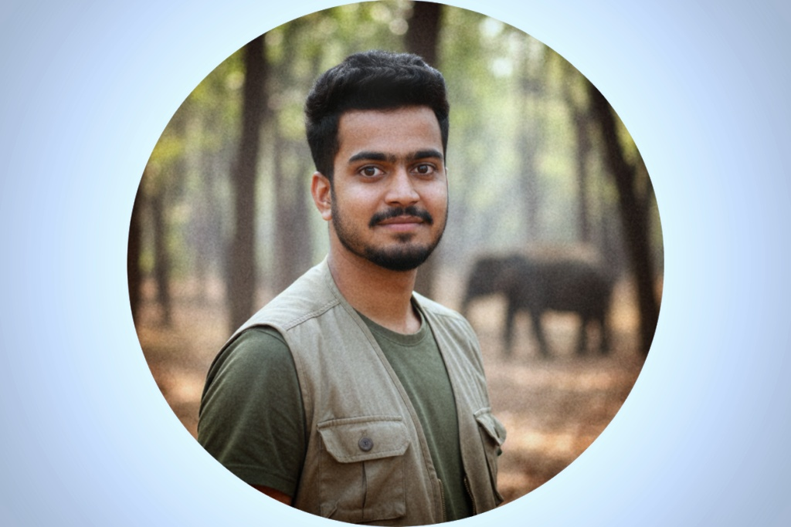

Wildlife Ecologist • Remote Sensing & Ecological Data Scientist • Nature Conservationist
"Protecting species and landscapes through earth observation and collaboration."
University of Padua Mar 2024 – Present
Remote Sensing, Biodiversity Conservation, Environmental Modelling
University of Padua Sep 2020 – Jul 2023
Forest & Land Management specialization; grade 105/110. Core: Forest Ecology & Management; Wildlife Conservation & Management; Forest Policy; Intro to GIS.
Wageningen University & Research Aug 2021 – Aug 2022
Forest & Nature Management specialization. Thesis: Human–Elephant conflict drivers in the Western Ghats.
University of Agricultural Sciences, Bengaluru Aug 2015 – May 2019
Overall GPA: 8.12/10; First Class.
PhD Researcher, MSc Forest Science
TESAF Department of Land, Environment, Agriculture and Forestry
University of Padua – Via dell'Università 16, 35020 Legnaro (PD), Italy
Email: harinaiyanna.cheriyandaraveendra.phd.unipd.it
Phone: +39 333 567 ****
ORCID: 0009-0009-0504-1286